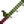

Night Market
The Night Market is a festival that occurs between the 15th and 17th of Winter. Various boats and merchants will appear at the docks on the Beach, and offer to sell goods or take the player for a boat ride. The Night Market is open between 5pm and 2am, but the Submarine Ride closes at 11pm, and the Mermaid Boat closes at 12:30am.
Unlike other festivals, shops and homes throughout Stardew Valley (including those at the beach) are not closed on the days of the event, and time continues to pass during the festival. Animals also need to be fed during the event; the game will not automatically consider them to be fed.
Attractions
Desert Trader
Available from 5pm to 2am. The Desert Trader will give the player a free cup of coffee each night.
Decoration Boat
Available from 5pm to 2am. The blue boat between the docks sells a variety of purely aesthetic decorations, some of which change with the seasons. Players can purchase an unlimited number of each decoration. Decorations can be placed indoors or outdoors.
The Decoration Boat is the only place where the candy cane decorations can be purchased. Seasonal Decor and the Seasonal Plants can be purchased at other festivals/shops.
| Permanent Stock | ||
|---|---|---|
| Image | Name | Purchase Price |
| Big Green Cane | ||
| Green Canes | ||
| Mixed Cane | ||
| Red Canes | ||
| Big Red Cane | ||
| Plain Torch | ||
| Stump Torch | ||
| Clouds Banner | ||
| Seasonal Decor | ||
| Seasonal Plant | ||
| Seasonal Plant | ||
| Seasonal Plant | ||
| Seasonal Plant | ||
| Seasonal Plant | ||
| Seasonal Plant | ||
Famous Painter Lupini
Available from 5pm to 2am. Famous Painter Lupini sells a different painting each day of the Night Market for  1,200g. The paintings rotate over a 3-year schedule, for a total of 9 paintings.
1,200g. The paintings rotate over a 3-year schedule, for a total of 9 paintings.
| Rotating Stock | ||||||||||||||||||||||||||||||||||||||||
|---|---|---|---|---|---|---|---|---|---|---|---|---|---|---|---|---|---|---|---|---|---|---|---|---|---|---|---|---|---|---|---|---|---|---|---|---|---|---|---|---|
|
Fishing Submarine
Available to enter from 5pm to 11pm. The Submarine houses a Captain who offers to take the player on a deep-sea fishing tour for  1,000g. Upon accepting, the submarine descends for approximately 30 minutes in-game time, and then a trapdoor opens to allow the player to fish. Simply talking to the Captain again brings the submarine back up, also in about 30 minutes. Fishing can continue until 2am, when the player collapses exhausted. A Warp Totem or a Return Scepter can be used to leave, maximizing fishing time without collapse.
1,000g. Upon accepting, the submarine descends for approximately 30 minutes in-game time, and then a trapdoor opens to allow the player to fish. Simply talking to the Captain again brings the submarine back up, also in about 30 minutes. Fishing can continue until 2am, when the player collapses exhausted. A Warp Totem or a Return Scepter can be used to leave, maximizing fishing time without collapse.
Three fish, Midnight Squid, Spook Fish, and Blobfish, can only be caught in the Submarine, unless the player uses Magic Bait. Additionally, Seaweed, Sea Jelly, Sea Cucumber, Octopus, and Super Cucumber can be caught here, and there is a rare chance to catch a Pearl.
However, when fishing with an Iridium Rod with a Curiosity Lure, chances of catching some of the items increase. Specifically, the chances of catching a Blobfish, Spook Fish, Super Cucumber, or Pearl is increased with the lure. Consequently, the chances of catching the other items decrease.
In addition, if the player uses a Training Rod, only the Sea Cucumber, Pearl, Seaweed, and Sea Jelly can be caught.
The table below shows the chance of catching each item while fishing in the submarine normally, with a Curiosity Lure, or with the Training Rod. Note that if the player is using Targeted Bait, the chance of catching that fish will also increase significantly, lowering the chances of catching other items.
| Image | Name | % Chance |  % Training Rod | |
|---|---|---|---|---|
| Blobfish | 10% | 20% | 0% | |
| Spook Fish | 16% | 18% | 0% | |
| Midnight Squid | 21% | 17% | 0% | |
| Sea Cucumber | 5% | 4% | 10% | |
| Super Cucumber | 4% | 7% | 0% | |
| Octopus | 2.2% | 1.6% | 0% | |
| Pearl | 0.4% | 0.9% | 0.9% | |
| Seaweed | 39% | 29% | 85% | |
| Sea Jelly | 2% | 1.5% | 4% |
Note: The chances of hooking Sea Jelly and Seaweed will change if the player is using Luck Buffs. The Sea Jelly has a 5% chance to be caught instead of Seaweed when fishing. This chance increases by 2.5% for every level of Luck Buff applied. For example, with +4 Luck, there is a 15% chance for Sea Jelly to be caught instead of Seaweed, and the overall chance of hooking increases to 6% (assuming no Training Rod or Curiosity Lure).
Magic Shop Boat
Available from 5pm to 2am. The magic shop boat is located to the right of Famous Painter Lupini. It sells decorative items, seeds, a unique hat, and a unique fireplace, with different stock each night. Each item may be purchased in unlimited quantities. Seed sell prices are the same as at Pierre's General Store.
Note that Garlic Seeds, Red Cabbage Seeds, and Artichoke Seeds are not available until Year 2. Note also that the price of the Cone Hat changes over the 3 days of the Night Market, with the lowest price occurring on Day 2. The Grave Stone sold on Day 1 costs  150g less at the Night Market than it does at the Spirit's Eve Festival. The Log Section sold on Day 3 costs
150g less at the Night Market than it does at the Spirit's Eve Festival. The Log Section sold on Day 3 costs  150g less at the Night Market than it does at the Carpenter's Shop.
150g less at the Night Market than it does at the Carpenter's Shop.
Rarecrows #7 and #8 and the Crystal Chair can be purchased only after earning the first ones by donating items to the Museum.
Mermaid Boat
Available from 5pm to 12:30am. Upon entering, a mermaid will appear and begin singing to the player, accompanied by a cutscene. The performance lasts 1 hour and 40 minutes. The player can leave the boat at any time, but leaving will restart the show.
After the show, clam shells inside the boat can be clicked to play musical notes. Playing the correct notes in the correct sequence will award the player a special item.
The correct sequence of musical notes can be found in Secret Note #15, although finding the secret note is not required to complete the sequence. The tune played during the mermaid show also indicates the solution. Click below to see the solution and information about the special item awarded.
| Solution |
|---|
| When played in the order 1-5-4-2-3 (left to right), the player will be awarded with a Pearl. Only one Pearl can be obtained in the Mermaid Boat by each player per each saved game, but the Mermaid Show can be viewed repeatedly by exiting and re-entering the boat at any time. There are also other ways of obtaining Pearls which are unaffected by obtaining this Pearl. |
Shrouded Figure
Available from 5pm to 2am. The Shrouded Figure offers to teleport the player back to their farm for  250g. It functions the same as the Warp Totem: Farm.
250g. It functions the same as the Warp Totem: Farm.
Traveling Cart
Available from 5pm to 2am. The Traveling Cart makes an appearance at the docks with the cart on a raft and the pig in a life-preserver. A selection of the usual items is sold (with a new re-randomized stock for each of the 3 days), including the Wedding Ring recipe in a Multiplayer game.
Villager Attendees
Unlike other Festivals, villagers can be seen deviating from their normal schedules to walk to the Beach to attend the Night Market. These villagers cannot be found outside the Night Market during the festival. The lists below show which villagers attend on which days each year.
Note that it's possible to complete Gathering, Slaying Monsters, and Fishing Quests during the Night Market. Talking to the villager will complete the quest, before scripted festival dialogue occurs.
Villagers who are married to the Player do not attend the Night Market, but instead follow their normal Monday/Tuesday/Wednesday marriage schedules.
If Robin is working on constructing a building on the Farm, she will not attend the Night Market.
During the Night Market, Willy will head to the Stardrop Saloon earlier and return home later than usual for three days.
| “ | “Starting tomorrow, a traveling merchant fleet will dock at Pelican Town for the yearly night market. The market starts at 5pm, and will be in port for the next three days. Please visit the beach after 5pm to join the festivities. There's free coffee!” |
Notes
- Since the game uses a unique beach map during festival days, items a player has placed on the Beach (Crab Pots, Chests, etc.) may disappear during the Night Market. These items will return on Winter 18.
- Additionally, Artifact Spots and forage items usually found on the Beach will be unavailable due to the festival, but will continue to spawn nightly. Tilling sand will still yield the usual Clay, Snow Yams, and Winter Roots.
- The bin next to the Fish Shop that is used to complete the "Juicy Bugs Wanted!" special order is still present during the Night Market.
- Shimmering lights can appear in the water, and the Pan can be used on them to obtain items.
Trivia
- The 'Red Eagle' painting from Famous Painter Lupini is in the art style of the Hopi Native American tribe.
- Occasionally, a mermaid may be seen swimming up past the window behind the submarine captain. Fish that share similar features to the Spook Fish and Midnight Squid can be spotted in the background as well, though these cannot be caught in the submarine.
Uncatchable Eel
Uncatchable Shrimp
Midnight Squid
History
- 1.3.27: Introduced.
- 1.4: The Coffee Merchant now sells only one cup per night. Removed exploit where time was paused during the Submarine ride ascent/descent by opening the player menu in singleplayer games. Removed time pause during the Mermaid Show when opening the menu. Fixed bug preventing Shane from attending the Night Market. Can no longer place items at the Beach during the Night Market.
- 1.4.1: Can now purchase museum rarecrows from the Magic Shop Boat once earned by donating items. The Coffee Merchant is now the Desert Trader.
- 1.5: Fish can now be caught when fishing outside of the Submarine ride, not just trash. Fixed bug where museum-related rarecrows were not sold at the Magic Shop Boat after being unlocked. Fixed bug in multiplayer where multiple people getting the free coffee gift at the same time could prevent anyone from getting it.
- 1.6: Fixed bug allowing all Night Market fish to be hooked with the Training Rod during the Submarine ride. Sea Jelly can now be caught in the Submarine ride. Upright Piano and Crystal Chair can now be purchased from the Magic Shop Boat.
| Festivals | |
|---|---|
| Spring | Egg Festival • Desert Festival • Flower Dance |
| Summer | Luau • Trout Derby • Dance of the Moonlight Jellies |
| Fall | Stardew Valley Fair • Spirit's Eve |
| Winter | Festival of Ice • SquidFest • Night Market • Feast of the Winter Star |